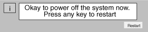
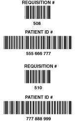

Operating Documentation
Direction 5114045-800, Rev# 10
LightSpeed 4.X Service Information (Advanced)
Operating Documentation |
| Last Revised on: | Jan 25, 2005 |
None. Works with all software versions.
Two versions of the ConnectPRO Option exist:
B7540RB Bar Code Reader Only
Use the hand-held bar code scanner to directly input information to the Exam Rx patient information screen. The Bar Code Reader hardware option reads information from the paper schedule or patient wrist strap bar codes.
B7500PL HIS/RIS Interface software WITH Bar Code Reader
Use the HIS/RIS software option to network patient information directly to the Exam Rx desktop from the Hospital Information System (HIS) and Radiology Information Systems (RIS) database. This option kit also contains the hand-held bar code reader.
Before you start the option installation, take an inventory of the supplied kit. Refer to Section 3 for the corresponding list(s).
Shutdown the System:
Select the (square red) [SHUTDOWN] button (shown below) on the Image Display Monitor.
Select [OK] to shutdown Applications. Shutdown stops the Applications and the software, then displays the boot prompt.
After the software shuts down, the following message appears:

Turn off the power switch on the console.
Remove the front and rear covers of the console.
Route the bar code scanner cable through the rear of the console.
Attach the Y-cable assembly (2180690-3) to the bar code scanner cord.
Unplug the existing keyboard connector from rear of Host Computer.
Attach keyboard connector to the short length female connector on the Y-Cable assembly.
Connect the long length male connector from the Y-Cable assembly to keyboard connection in the back of the Host Computer.
Optional: Mount the bar code scanner’s holder to the left side of the Exam Rx monitor, or to a location selected by the site Technologist. Use the double-sided tape (supplied with kit) to attach the holder.
| NOTE: | Do not replace the console front cover until you verify the bar code scanner operation. |
Restore power to the console and boot up the system to the scan user level.
Select [PATIENT SCHEDULE] and [ADD PATIENT] on the Exam Rx desktop.
Use the hand-held bar code scanner to scan the PATIENT ID# bar code on one of the Bar code examples in Illustration 1. Make sure the screen updates with the corresponding number, either 555 666 777 or 777 888 999.
The bar code scanner beeps when it successfully reads a bar code.
Practice with the bar code scanner and bar code samples first. Delete screen entries and re-read bar codes until you feel comfortable with the bar code scanner operation.
Recommended: New users, take some time to practice with the bar code scanner and bar code samples. Delete the screen entry and reread the bar codes until you feel comfortable with the bar code scanner operation.
A User’s Manual comes with the kit. It contains detailed usage information, as well as additional sample bar codes. If you encounter difficulties, refer to the Operation User Maintenance and Troubleshooting section of this manual. If you still cannot successfully scan the sample bar codes, select the [DIAGNOSTICS] menu from the service desktop, [OPERATOR I/O] from the Selection menu, and run the [KEYBOARD CONFIDENCE TEST] diagnostic to identify a bad cable connection or failed FRU.
Select the [REQUISITION #] data field.
Use the hand held bar code scanner to scan the REQUISITION# bar code on one of the Bar code examples in Illustration 1. Make sure the screen updates with the corresponding number, either 508 or 510.
Manually type/enter the Patient Name, and select [ACCEPT] .
Select [VIEW SCHEDULE] .
Make sure the Schedule screen displays the test patient entry.
Select [DELETE] .
Select [QUIT] .
This completes the bar code scanner and keyboard function test.
Reinstall the console front cover.
| NOTE: | For customer option #B7500PL ONLY, proceed to ConnectPRO Software Option Installation and Checkout. |
| NOTE: | If you are using a foreign language (non-English) keyboard, you may see other numbers/characters displayed in the Patient ID# field when you scan the codes in Illustration 1. |
Illustration 1: Bar Code Samples to Scan

Table 1: HIS/RIS Interface w/Bar Code Reader Option Kit
| Item | P/N | Name | FRU | Qty. | Description |
| 1 | B7500LN | LINUX SW key | N | 1 | ConnectPro HIS/RIS SW key (LINUX) hospital sys/radiology SYS info. |
| 2 | B7540RB | Bar Code Reader Kit | N | 1 | Bar Code Reader Kit including Y-Cable and rubber mount. |
Table 2: Bar Code Reader Only Option Kit
| Item | P/N | Name | FRU | Qty. | Description |
| 1 | 2371407 | Option MOD | 1 | 1 | ConnectPro HIS/RIS SW Key LINUX |
Table 3: Bar Code Reader Only Option Kit
| Item | P/N | Name | FRU | Qty. | Description |
| 1 | 2180690-2 | Bar Code Scanner | 1 | 1 | Hand Held Bar Code Scanner ONLY |
| 2 | 2180690-3 | Y-cable assembly | 1 | 1 | Console/Keyboard/Scanner interface cable ONLY |
| 3 | 2180690-4 | Scanner Holder | 2 | 1 | Plastic holder ONLY (to store bar code scanner when not in use) |